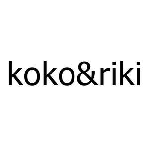

Trade Mark Journal No.2026/012 20 March 2026
UK00004350143 6 March 2026 (5,18,20,21,25,28,31,35)

- Class 5
- Medicines for animals; Medicines for human purposes; Chemical reagents for medical or veterinary purposes; Chemical preparations for veterinary purposes; Chemical preparations for medical purposes; Reagents (Chemical -) for medical or veterinary purposes; Radioactive substances for medical purposes; Dermatological pharmaceutical substances; Dietary supplements for animals; Dietary supplements for humans; dietary supplements; nutritional supplements; medical preparations for slimming purposes; food for babies; herbs for medicinal purposes; Herbal beverages for medicinal use; Hygienic preparations and articles; Feminine hygiene products ; sanitary towels; tampons; medical plasters; Materials for dressings; Adult diapers; Disposable diapers of paper for babies; Diapers for pets; Absorbent diapers of paper for pets; Diapers [babies' napkins]; Paper diapers for infants; Wipes impregnated with disinfectants for hygiene purposes; Antibacterial wipes.
- Class 18
- Harness made from leather; Bags made of leather; Key cases [leather goods]; Boxes made of leather; Briefcases made of leather; Card holders made of leather; Bags made of imitation leather; Cases of imitation leather; bags; wallets; Boxes of leather; Luggage trunks; key cases; suitcases; Whips; harnesses; Saddlery; collars for pets; clothing for pets.
- Class 20
- Beehives; Artificial honeycombs for beehives; Sections of wood for beehives; Playpens for babies; cradles; infant walkers; Plastic boxes; Wood boxes; Containers, not of metal, for storage; Chests; Loading pallets, not of metal; Amber; mother-of-pearl; meerschaum; Wax statues; Ornamental models made of plaster; Models [ornaments] made of plastic; Figurines of wood; Figurines of resin; Baskets, not of metal; fishing baskets; Kennels for household pets; nesting boxes for household pets; beds for household pets.
- Class 21
- Toothbrushes; electric toothbrushes; dental floss; shaving brushes; hairbrushes; make up brushes; combs; Cages for household pets; indoor aquariums; Indoor insect vivariums; Indoor terrariums [vivariums]; indoor terrariums for animals ; Indoor terrariums [plant cultivation]; Mouse traps; insect traps; Electric devices for attracting and killing insects; Fly traps; fly swatters.
- Class 25
- Outer clothing; bathrobes; socks; shawls; bandanas; scarves; waist belts; Footwear; shoes; slippers; sandals; Headgear; hats; caps with visors; berets; caps [headwear]; skull caps; Underwear; innerwear.
- Class 28
- Toys for animals; Fishing tackle; artificial fishing bait; Decoys for hunting or fishing; Novelty toys for parties; Paper party favors; paper party hats.
- Class 31
- Live animals; Fertilized eggs for hatching; Living plants; Fresh herbs; live flowers; saplings; seedlings; Dried plants for decoration; Animal foodstuffs; Malt extracts for consumption by animals; cat litters.
- Class 35
- Information services relating to advertising; Advisory services relating to advertising; marketing; public relations; Organization of fairs and exhibitions for commercial and advertising purposes; Provision of an online marketplace for buyers and sellers of goods and services; Office functions services; secretarial services; Newspaper subscription services; compilation of statistics; Systemization of information into computer databases; Telephone answering service; Business management; Business administration consultancy; Consultancy and information services relating to accounting; Accounting services; personnel placement; Personnel recruitment; personnel selection; import-export agency services; Temporary personnel placement services; Temporary assignment of personnel; Auctioneering; The bringing together, for the benefit of others, of a variety of goods, namely, Medicines for animals, Medicines for human purposes, Chemical reagents for medical or veterinary purposes, Chemical preparations for veterinary purposes, Chemical preparations for medical purposes, Reagents (Chemical -) for medical or veterinary purposes, Radioactive substances for medical purposes, Dermatological pharmaceutical substances, Dietary supplements for animals, Dietary supplements for humans, dietary supplements, nutritional supplements, medical preparations for slimming purposes, food for babies, herbs for medicinal purposes, Herbal beverages for medicinal use, Hygienic preparations and articles, Feminine hygiene products , sanitary towels, tampons, medical plasters, Materials for dressings, Adult diapers, Disposable diapers of paper for babies, Diapers for pets, Absorbent diapers of paper for pets, Diapers [babies' napkins], Paper diapers for infants, Wipes impregnated with disinfectants for hygiene purposes, Antibacterial wipes, Harness made from leather, Bags made of leather, Key cases [leather goods], Boxes made of leather, Briefcases made of leather, Card holders made of leather, Bags made of imitation leather, Cases of imitation leather, bags, wallets, Boxes of leather, Luggage trunks, key cases, suitcases, Whips, harnesses, Saddlery, collars for pets, clothing for pets, Beehives, Artificial honeycombs for beehives, Sections of wood for beehives, Playpens for babies, cradles, infant walkers, Plastic boxes, Wood boxes, Containers, not of metal, for storage, Chests, Loading pallets, not of metal, Amber, mother-of-pearl, meerschaum, Wax statues, Ornamental models made of plaster, Models [ornaments] made of plastic, Figurines of wood, Figurines of resin, Baskets, not of metal, fishing baskets, Kennels for household pets, nesting boxes for household pets, beds for household pets, Toothbrushes, electric toothbrushes, dental floss, shaving brushes, hairbrushes, make up brushes, combs, Cages for household pets, indoor aquariums, Indoor insect vivariums, Indoor terrariums [vivariums], indoor terrariums for animals , Indoor terrariums [plant cultivation], Mouse traps, insect traps, Electric devices for attracting and killing insects, Fly traps, fly swatters,Outer clothing, bathrobes, socks, shawls, bandanas, scarves, waist belts, Footwear, shoes, slippers, sandals, Headgear, hats, caps with visors, berets, caps [headwear], skull caps, Underwear, innerwear, Toys for animals, Fishing tackle, artificial fishing bait, Decoys for hunting or fishing, Novelty toys for parties, Paper party favors, paper party hats, Live animals, Fertilized eggs for hatching, Living plants, Fresh herbs, live flowers, saplings, seedlings, Dried plants for decoration, Animal foodstuffs, Malt extracts for consumption by animals, cat litters, enabling customers to conveniently view and purchase those goods, such services may be provided by retail stores, wholesale outlets, by means of electronic media or through mail order catalogues.
OLGIPAW TEKSTİL AKSESUAR PAZARLAMA TİCARET ANONİM ŞİRKETİ
Representative: Cristina Casas Feu